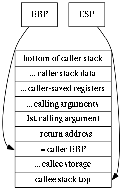

9.1. Assembly Language Overview¶
9.1.1. Useful Assembler Links¶
Here are some useful starting points for learning assembly language:
gdb cheat sheet for debugging programs
x86 Assembly Guide (follows the Intel assembler sync)
Baby steps in x86 assembly (follows the AT&T assembler syntax)
The Intel 8086 / 8088/ 80186 / 80286 / 80386 / 80486 Instruction Set
Intel® 64 and IA-32 Architectures Software Developer Manuals.
Load-time relocation of shared libraries for a more advanced discussion of load-time relcation. Note this mentions:
Load-time relocation is one of the methods used in Linux (and other OSes) to resolve internal data and code references in shared libraries when loading them into memory. These days, position independent code (PIC) is a more popular approach, and some modern systems (such as x86-64) no longer support load-time relocation.
You’ll be looking at hex dumps so note that the Intel x86 processor is little-endian, meaning that the hex value 0x12345678 in a 32-bit word it would appear as x78x56x34x12 and printing the value in a stack overflow would require python -c 'print("\x78\x56\x34\x12")'. When building exploits you would use the struct.pack('<l', 0x12345678) python routine to build an exploit string.
9.1.2. The Stack Frame and Calling Conventions¶
First understand the stack frame used by any routine is delimited by the ebp and esp registers. The stack starts at the top of the address space and grows down:
Next understand the Calling Conventions.
The caller must save caller-saved registers, push arguments onto the stack, then issue the call instruction, which pushes the return address onto the stack. This is key for a stack overflow exploits - the return address can be changed to something else (like the address of a shell code exploit). Upon return, the caller must remove the return parameters from the stack and restore caller-saved registers.
The callee standard subroutine entrance code saves the callers stack frame info and sets up the local stack frame. Simply pushing ebp on the stack (push ebp) saves the callers stack frame. Setting up the local stack frame is done via mov ebp,esp then allocating stack space by sub esp,SPACE:
08048520 <play>:
play():
8048520: 55 push ebp # save callers ebp
8048521: 89 e5 mov ebp,esp # new ebp
8048523: 81 ec 18 01 00 00 sub esp,0x118 # allocate stack space, here 70w, 280b
The callee returns by the leave and ret instructions. leave undoes the subroutine entrance code and ret undoes the caller’s call. Specifically, leave sets esp <- ebp (pointing to the caller’s saved esp) and pops the stack into ebp (recall the first thing the callee did was to push ebp). That sets up the old stack frame. Then ret essentially pops the stack into the instruction pointer eip (recall the call instruction pushed the return address on the stack). Again, a stack overflow allows changing the return address to something else like a shellcode exploit.
This is the caller’s stack before the call:
The caller prepares the stack just before the call:
Just after the call instruction the return address is pushed onto the stack but the callee has not set up the stack:
Just after the callee sets up their stack:
Just after the callee executes the leave instruction (before the ret):
Just after the callee executes the ret instruction:
Finally after the caller pops off the calling data: